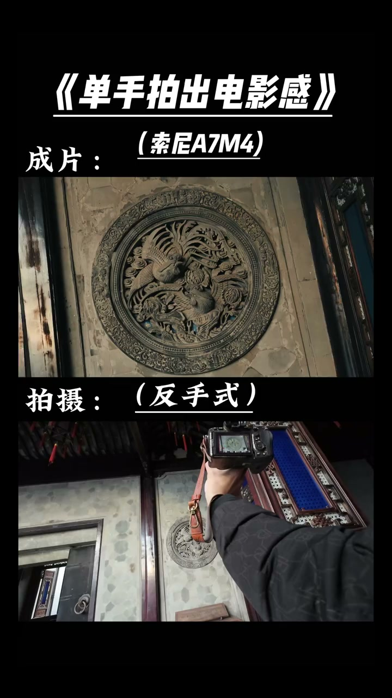
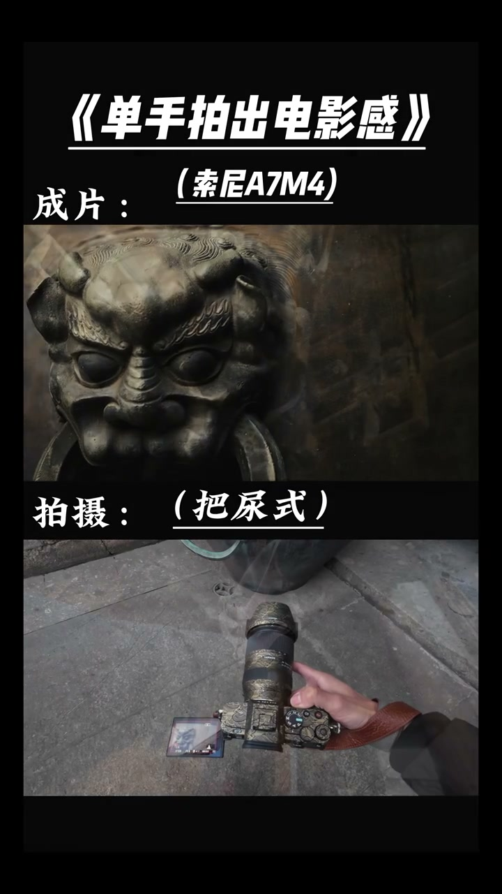
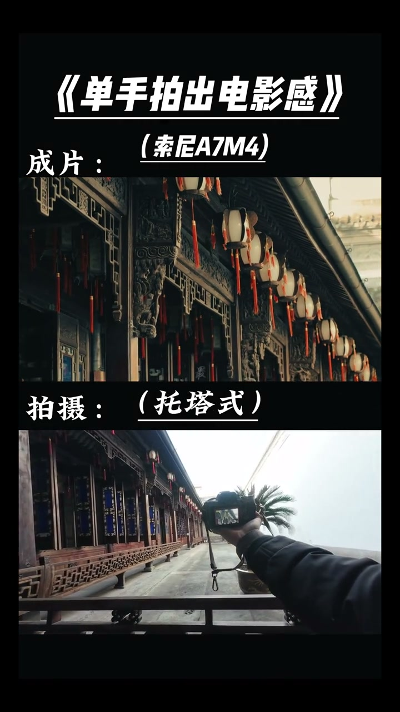

01
中文
电影感不来自设备，来自构图意识加光线选择加画面比例。
EN
A cinematic look comes not from gear but from composition, light, and aspect ratio.
表达提示composition and light（构图与光线）

Scene English · 拍摄 · 电影感
How to Shoot a Cinematic Look
🎧 语音讲解
Cinematic Look Comes from Habits
情境电影感不需要昂贵设备，改变几个拍摄习惯就能让画面质变。
电影感不来自设备，来自构图意识加光线选择加画面比例。
A cinematic look comes not from gear but from composition, light, and aspect ratio.
表达提示composition and light（构图与光线）
改变几个拍摄习惯，就能让画面产生电影般的质感。
A few shooting habits can give your footage a film-like quality.
表达提示film-like quality（电影质感）
最重要的三个要素：宽画幅比、有方向的光线、层次分明的前中后景。
The big three: a wide aspect ratio, directional light, and layered foreground, middle, and background.
表达提示aspect ratio（画幅比）
film-like quality（电影质感
aspect ratio（画幅比

Wide Cinemascope
情境后期添加2.35:1黑边遮幅，是最快的电影感捷径。
加黑边遮幅：后期添加 2.35比1 黑边，这是最快的电影感捷径。
Add black bars: 2.35:1 letterboxing is the fastest shortcut to a cinematic feel.
表达提示letterbox（遮幅）
遮幅让画面更像宽银幕电影。
Bars make the frame feel like widescreen cinema.
表达提示widescreen（宽银幕）
黑边是锦上添花，不是雪中送炭，还要配合光线和构图。
Black bars help, but light and composition carry the look.
表达提示frosting on the cake（锦上添花）
letterbox（遮幅
widescreen（宽银幕

Directional Light
情境避免全脸均匀光照，让光线从一侧来，脸的另一侧有阴影。
光线有方向：避免全脸均匀光照。
Make light directional: avoid flat, even lighting on the face.
表达提示directional light（方向光）
让光线从一侧来，脸的另一侧有阴影。
Let light come from one side so the other side falls into shadow.
表达提示fall into shadow（落入阴影）
侧光太强烈时，用反光板或柔光补一点亮。
If the side light is too harsh, bounce or soften it slightly.
表达提示bounce light（补光）
directional light（方向光
fall into shadow（落入阴影

Foreground and Depth
情境在镜头前放一个物体并虚化增加层次；用大光圈控制景深突出主体。
前景虚化：在镜头前放一个物体并虚化，增加画面层次。
Foreground blur: place an object near the lens and soften it for depth.
表达提示foreground blur（前景虚化）
控制景深：用大光圈让背景虚化，突出主体。
Control depth of field with a wide aperture to isolate the subject.
表达提示depth of field（景深）
前景物体占画面不要超过15%，别挡住主体。
Keep the foreground object under 15% of the frame—don't block the subject.
表达提示don't block the subject（别挡主体）
foreground blur（前景虚化
depth of field（景深

Lower the Saturation
情境适当降低色彩饱和度10-20%，画面更沉稳有质感。
降低饱和度：适当降低色彩饱和度 10到20%，画面更沉稳。
Drop saturation by 10–20% for a calmer, more grounded image.
表达提示lower saturation（降低饱和度）
饱和度降太多会让画面变灰，控制在15%左右即可。
Too much desaturation looks gray—stay around 15%.
表达提示look gray（画面发灰）
电影感等于宽画幅加侧光加前景层次加低饱和加深景深。
Cinematic feel = widescreen + side light + foreground + desaturation + shallow depth.
表达提示cinematic formula（电影感公式）
lower saturation（降低饱和度
look gray（画面发灰
说电影感三要素
说遮幅
说方向光
说前景景深
说饱和度
黑边只是锦上添花。
光线要有方向。
前景别挡主体。
饱和度别降过头。
关键在技巧不在设备。